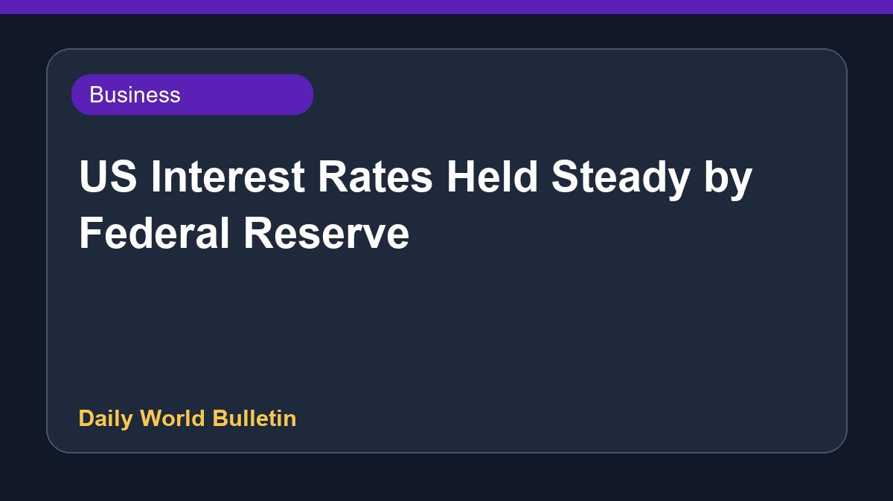

US Interest Rates Held Steady by Federal Reserve

The US Federal Reserve has kept interest rates unchanged between 3.5% and 3.75%, a widely anticipated move by central bank authorities. Following this decision, the head of the Fed stated there is no simple solution available to quickly resolve the issue of elevated prices. Further details regarding upcoming economic forecasts or policy adjustments were limited in the provided report.
Original source: BBC Business
'No magic wand' to tackle high prices, Fed boss says as US interest rates held ↗
'No magic wand' to tackle high prices, Fed boss says as US interest rates held ↗